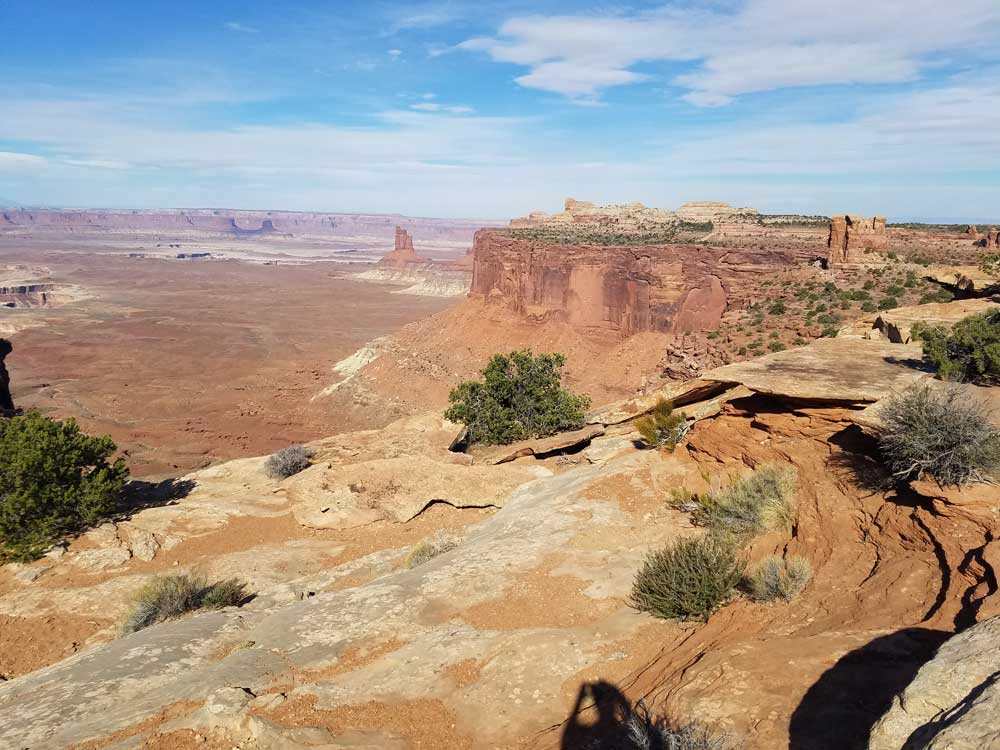
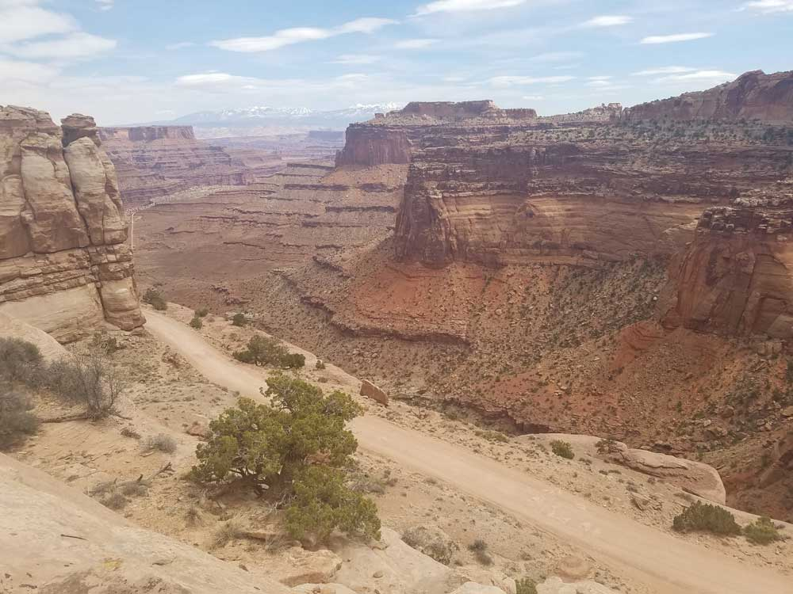
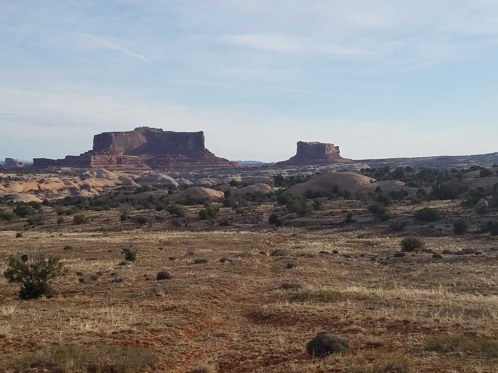
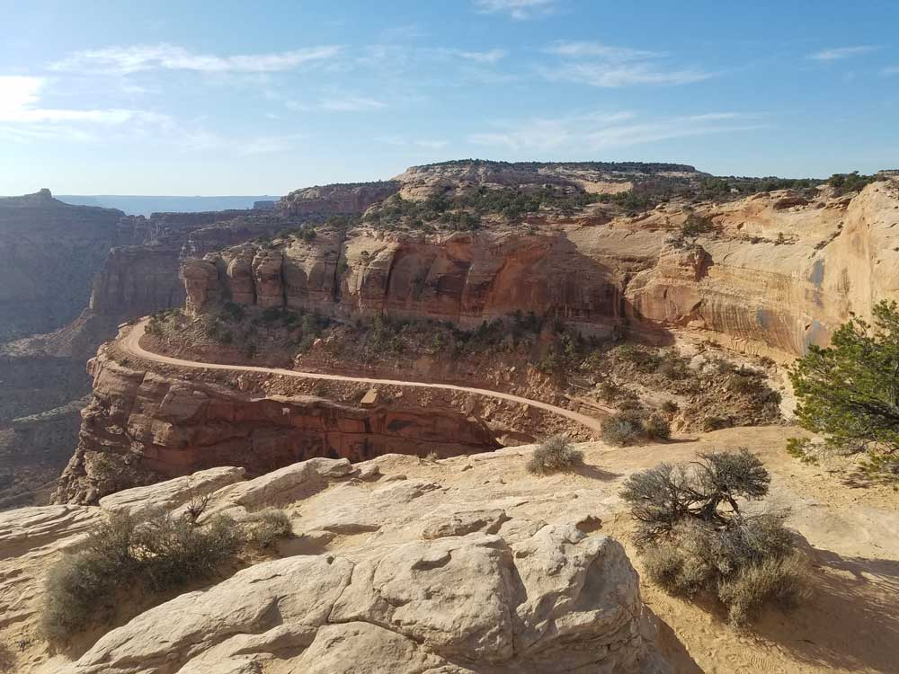
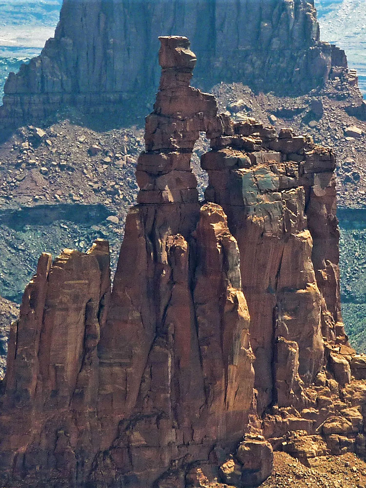
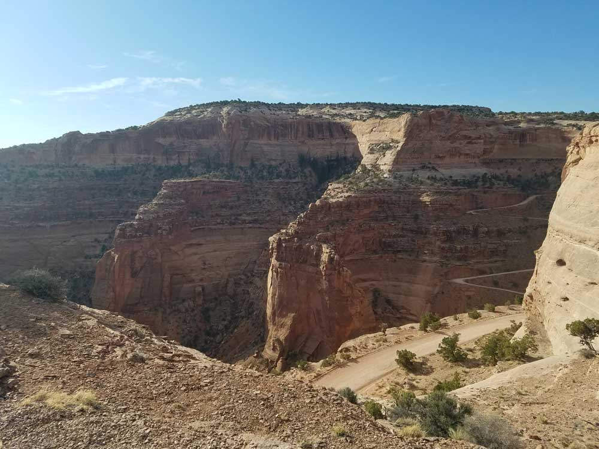
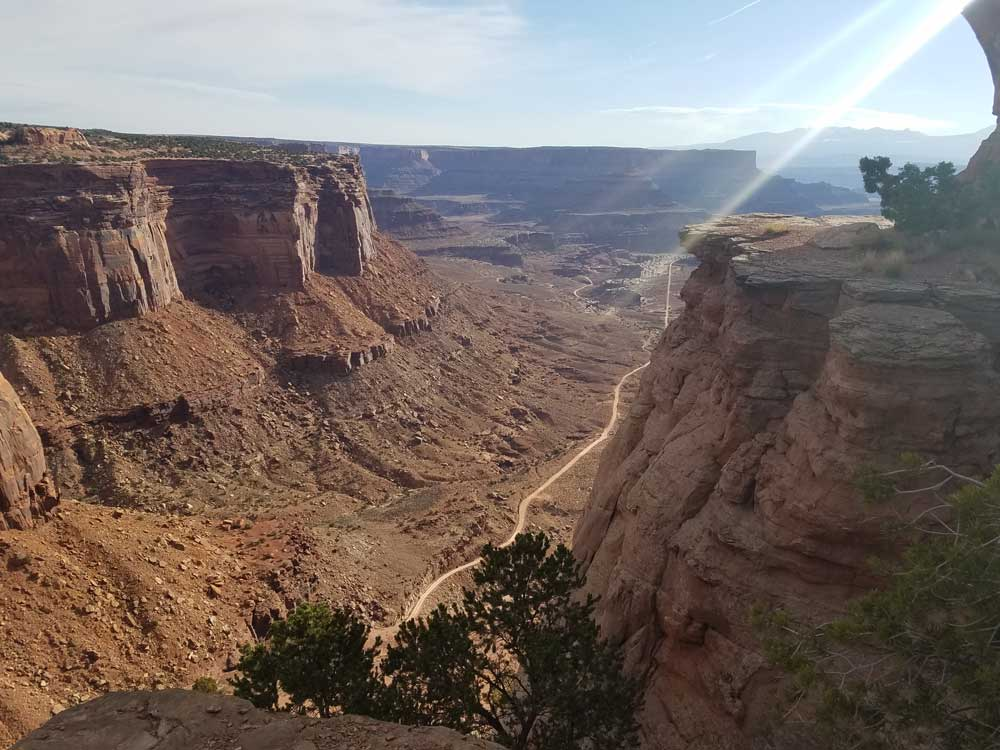

Region rests on sheer sandstone cliffs over 1,000 feet (304 m) above the surrounding terrain.
General Information
- Hours:
-
Open year-round, 24 hours a day
Island in the Sky Visitor Center: hours vary by season - Fees:
- Private Vehicle: $30 (valid for 7 days)
Motorcycle: $25
Pedestrian/Bicycle: $15 per person - Pet Policy:
- Pets are not allowed on trails, at overlooks or in the backcountry, even if carried
Leashed pets are allowed in the developed campground and along paved roads - Closest Cities with Hotels:
- Moab, UT, 32 miles
- Seasons:
- Open all year; spring and fall offer the most comfortable weather
Summer highs often in the 90s °F; winter brings cold temperatures and occasional snow - Location:
- Island in the Sky Visitor Center, Canyonlands NP, UT
- Website:
- nps.gov/cany
How to Get There
From Moab (32 mi): Drive north on US-191, turn left onto UT-313, and continue to the Island in the Sky Visitor Center at the entrance to the district.
Overview
Island in the Sky is the most visited and most accessible district of Canyonlands National Park. It sits on a broad, flat-topped mesa wedged between the Green and Colorado Rivers, resting on sheer sandstone cliffs more than 1,000 feet above the surrounding terrain. Below the mesa lies the White Rim, a sandstone bench about halfway down, and below that the deep canyons carved by the two rivers before they meet at the Confluence in the heart of the park.
Visitors come to Island in the Sky for its vast, sweeping views, which stretch for up to 100 miles across a maze of canyons, buttes, mesas and spires to the La Sal, Abajo and Henry Mountains on the horizon. Every overlook offers a different perspective on the landscape, and the district is the easiest part of Canyonlands to see in a short time, with a paved scenic drive and short walks to famous landmarks such as Mesa Arch, Grand View Point and Upheaval Dome. Its location just 32 miles from Moab and near Arches National Park makes it a staple of any Moab-area trip.
Sightseeing and Scenic Drives
The district’s main scenic drive runs about 12 miles from the visitor center south to Grand View Point, with a 5-mile spur road branching west to Upheaval Dome. Paved pull-offs and overlooks along the way include Shafer Canyon Overlook, with a dizzying view of the switchbacks of the Shafer Trail road, the Green River Overlook, Buck Canyon Overlook, Orange Cliffs Overlook and Candlestick Tower Overlook. Mesa Arch, a short walk from the main road, is one of the most photographed arches in the Southwest, especially at sunrise when the underside of the arch glows red. At the end of the road, Grand View Point offers one of the most expansive views in the national park system. For those with a high-clearance four-wheel-drive vehicle or mountain bike, the 100-mile White Rim Road loops around the mesa on the White Rim bench far below.
Hiking
Island in the Sky offers a variety of trails, most of them short and easy to moderate along the mesa top. Easy hikes include Mesa Arch, the Grand View Point Trail along the cliff edge, the White Rim Overlook Trail and the Murphy Point Trail. Moderate options include the Aztec Butte Trail, which climbs a slickrock dome to ancestral Puebloan granaries, and the Upheaval Dome overlook trails, which look into a mysterious crater-like formation. More strenuous hikes descend steeply off the mesa to the White Rim, including the Gooseberry Trail, the Lathrop Trail and the Syncline Loop around Upheaval Dome. There is little shade and no water along the trails, so hikers should carry plenty of water, especially in summer.
Other Activities
Beyond sightseeing and hiking, Island in the Sky is known for multi-day four-wheel-drive and mountain bike trips on the White Rim Road, which require a permit for overnight stays at its primitive campsites. The steep, unpaved Shafer Trail and Potash Road connect the mesa to the Colorado River and Moab and are popular drives for experienced off-roaders. Canyonlands is an International Dark Sky Park, and Island in the Sky offers outstanding stargazing as well as ranger-led astronomy programs in season. Photography is popular at sunrise at Mesa Arch and at sunset at Grand View Point and Green River Overlook. River trips on the Green and Colorado Rivers, scenic flights and guided jeep tours can also be arranged from Moab.
Getting to Island in the Sky
Island in the Sky is located in southeastern Utah, about 32 miles from Moab, a drive of roughly 40 minutes. From Moab, visitors drive north on U.S. 191, then turn west on Utah Route 313, which climbs onto the mesa and passes the entrance to Dead Horse Point State Park before reaching the park entrance. Although the Needles District is only about 15 miles away as the crow flies, there are no roads connecting the districts inside the park, and the drive between them is about 2.5 hours. The nearest airport is Canyonlands Regional Airport north of Moab, with larger airports in Grand Junction, Colorado (about 2 hours), and Salt Lake City (about 4 hours). Interstate 70 is about 30 miles north of the turnoff for Route 313.
Seasons
Island in the Sky is open year-round, 24 hours a day. Spring (April to May) and fall (September to October) offer the most comfortable weather, with daytime highs in the 60s to 80s °F, and are the busiest times of year. Summer is hot, with highs often in the 90s and little shade, and afternoon monsoon thunderstorms from July through September can bring lightning and flash floods. Winters are cold and quiet, with highs in the 30s and 40s and occasional snow that can make trails and roads icy, while a dusting of snow on the red rock creates some of the most striking scenery of the year. The Shafer Trail and White Rim Road may close temporarily after storms or snow.
Camping and Lodging
There is no lodging inside Island in the Sky. The district’s only developed campground is Willow Flat Campground, a small campground near the Green River Overlook with a limited number of sites, no water and stunning sunset views, while primitive backcountry campsites along the White Rim Road require a permit. Next door, Dead Horse Point State Park offers two campgrounds and yurts, and several Bureau of Land Management campgrounds along Route 313 and near Moab offer additional first-come camping. Most visitors stay in Moab, which has a wide selection of hotels, motels, vacation rentals and campgrounds and serves as the base for exploring both Canyonlands and Arches National Parks. Green River, Utah, about an hour and a half away, offers additional budget-friendly options.
Visitor Centers
The Island in the Sky Visitor Center, located just past the entrance station near the edge of Shafer Canyon, offers exhibits on the geology and history of the area, a bookstore, restrooms, water and ranger information, along with backcountry and White Rim Road permits. Its hours vary by season, and it may have limited hours or close for a few days in winter. Nearby, the Shafer Canyon Overlook offers one of the first dramatic views in the district. Visitors coming from Moab can also stop at the Moab Information Center in town for information on Canyonlands, Arches and the surrounding public lands.
This article uses material from the National Park Service "Canyonlands National Park" website and the Wikipedia article "Canyonlands National Park", which is released under the Creative Commons Attribution-Share-Alike License 3.0
Featured Trails
Aztec Butte Trail
1.4 miles roundtrip, 222 feet elevation gain, Moderate
Moderate desert trail leading across sandstone mesas to ancient Puebloan granaries and panoramic canyon viewpoints high above the rugged landscape.
Gooseberry Trail
4.6 miles roundtrip, 1,529 feet elevation gain, Strenuous
Steep backcountry trail descending dramatic switchbacks to the White Rim bench with sweeping canyon vistas and rugged desert landscapes.
Mesa Arch
0.6 mile roundtrip, 55 feet elevation gain, Easy
Spectacular arch perched on a cliff edge. Visitors can get views of the White Rim Road, canyons, and the distant La Sal Mountains.
Grand View Trail
1 mile roundtrip, 73 feet elevation gain, Easy
Offers a spectacular view of the Canyonlands area. From the viewpoint at 6,080 feet elevation, visitors can see distant mountains, canyons, basins, and the White Rim Road
Murphy Point Trail
3.4 miles roundtrip, 142 feet elevation gain, Easy
Mostly level desert trail leading to dramatic canyon overlooks with panoramic views of the Green River, towering rock formations, and the White Rim landscape.
Upheaval Dome
1 mile roundtrip, 200 feet elevation gain, Moderate
Impact structure, the deeply eroded bottom-most remnants of an impact crater approximately 10 kilometres (6.2 mi) in diameter and the crater is known to be less than 170 million years old
White Rim Overlook Trail
1.8 miles roundtrip, 159 feet elevation gain, Easy
Easy canyon-edge trail featuring expansive desert panoramas, towering rock formations, and sweeping views above the Colorado River and White Rim sandstone basin.
Grinnell Point and Swiftcurrent Lake from the Many Glacier Hotel
Jeff P from Berkeley, CA, USA, CC BY 2.0, via Wikimedia Commons; Image Size Adjusted
.jpg){kind=link}
White Rim Road
Remote backcountry route traversing a sandstone bench beneath towering canyon walls with expansive desert vistas, rugged four-wheel-drive terrain, and access to some of the most dramatic landscapes in the Colorado Plateau.







